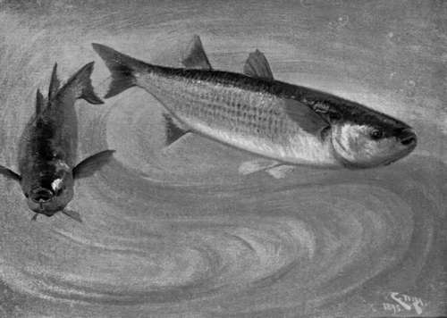

The Grey Mullet
Description
This section is from the book "Sea Fishing", by John Bickerdyke. Also available from Amazon: Sea Fishing.
The Grey Mullet
The Grey Mullet, like the bass, has a prickly dorsal fin. It is very easily distinguished from its more voracious companion by the fact that this fin contains only four very evident spines, while that of the bass contains eight. The mouth of the mullet, too, is small and only suited for soft food. Of these fish there are two kinds, the great grey mullet (Mugil capito) and the lesser grey mullet (Mugil chelo), the latter being very abundant in some South-coast harbours, and sometimes as easy of capture as the great grey mullet is difficult. A distinction between the two varieties is the number of rays in the tail fin, the larger kind, which is also called the ' thin-lipped mullet,' having seventeen, while the lesser, or thick-lipped mullet, has fifteen.
Of red, or surmullet, beloved of the Romans, I need say nothing, for these fish are very rarely captured, except in nets, either by the sportsman or the professional fisherman, only now and again succumbing to the charms of a harbour-bred ragworm, more particularly in the neighbourhood of very foul drains. I commend this point to the attention of those who deem red mullet worthless unless served à la woodcock. A good many are caught in trammel nets.
Grey mullet are gregarious, and very plentiful in some estuaries and harbours, Chichester, Littlehampton, Plymouth, Weymouth, and the mouth of the Stour being favourite haunts of theirs. They appear to be as much at home in fresh water as in salt. At one time shoals were to be found in Oulton Broad, entering there, no doubt, when the lock was open, or, perhaps, making their way by the Yare and journeying round to Mutford.
In the thirties a gentleman named Arnold, living at Guernsey, sent a communication to the Zoological Society of London, concerning some interesting observations he had made on mullet kept in a five-acre lake which for nine months in the year was filled with fresh water. In summer the sea entered the lake through a tunnel. There were several varieties of sea fish in the enclosure, including a large number of mullet which appeared to breed freely. I have no doubt that mullet could be introduced with advantage into many a semi-tidal pool, provided there were a sufficient depth of water.
A very curious experiment was recorded in connection with the placing of a mullet which had been accustomed to the Baltic (where the amount of saline matter is small) in North Sea water in which there was three times as much salt. The fish was forced to float. For about three hours it made ineffectual attempts to keep below the surface, and then died. From observations made in an aquarium, it seems that mullet are in the habit of sucking sand into their mouths, almost immediately afterwards sending out the coarser particles. By a beautifully arranged natural filter, hard substances of any considerable size cannot find their way into the stomach, nor can sand get access to the gills ; for this reason, therefore, it is absolutely necessary that any bait used for mullet should be soft, and the hook should be small. If the hook were too large, it would be rejected and the bait retained.
Following up the tide into estuaries and harbours, these shy fish feed greedily, sucking in various odds and ends of partly decomposed matter, silkweed, ragworms, fish garbage, and the like. They will swim after a ship that has come from abroad into dock, and work all over its bottom with their snouts, eating the softer seaweeds and small marine insects.
Mullet are very easily tamed, and, being susceptible to sound, have been known to assemble for dinner on hearing the knocking noise of the chopper employed to prepare their food. So acute is the hearing of these creatures, that old mullet fishers would never dream of shouting to one another, and when rowing after a shoal, the men, if careful, will muffle their oars.
Grey Mullet—' Following Up The Tide'.
The thick-lipped variety is much more widely distributed than are the large grey mullet. Quantities have been seen in Belfast Lough and other parts of Ireland. From June to September they are found on the coasts of the Orkneys and Zetland, and also on the eastern and western shores of Scotland. Of all the sporting fish of the sea, grey mullet are the most difficult to capture and among the gamest when hooked. There are times when the lesser variety will feed ravenously, and are caught in large numbers on a paternoster baited with a live ragworm ; but the big fellows that we see with their broad dark backs swimming round the piles in harbours, or under the old-fashioned wooden jetties and piers, are singularly cautious so far as taking a baited hook into their mouths is concerned. In the matter of showing themselves their timidity is not apparent. Sometimes they are speared or harpooned, and there is a legend of an Italian gentleman who caught many fish in this way from Margate Jetty.
These fish are as difficult to net as they are to secure with hook and line. When first surrounded there is, to use the words of the reporter, ' a scene of great confusion'; but presently they become organised, and elect a leader who carefully examines the net for holes, and, failing to find any, leaps over the buoy rope, the rest following. In the Mediterranean the fishermen sometimes heighten their net above the surface by means of pieces of cane. Another plan is to sprinkle a little straw or sawdust on the water inside the net. The mullet then seem unable to distinguish between the rope and the straw, and take short leaps. At Naples the fishermen sometimes place rafts made of reeds close to the outside of the nets encircling the mullet, so that when the fish leap they fall on to the rafts and are captured. In English waters a trammel net is often found deadly.
Sometimes enormous takes of grey mullet are made in seines. One of the biggest hauls on record occurred in January of this year (1895). A quantity of these fish was seen in Whitesand Bay, Land's End. The Sennen Cove fishermen were sent for, and shot their nets by moonlight, about ten o'clock at night. About twelve thousand mullet, averaging something like 4 lbs. each, were surrounded. Many of them weighed as much as 8 lbs. This was a very unusual and very valuable catch, the fish, which weighed several tons, selling for 600 l. The take seemed so remarkable, that I doubted the accuracy of the figures and wrote to the postmaster of St. Just on the subject. He kindly assures me that the report is perfectly correct, and adds that the buyers who sent the fish to Paris made a very bad bargain.
Continue to:
- prev: The Bass, The Labrax Of Aristotle, And Lupus Of Pliny. Continued
- Table of Contents
- next: The Grey Mullet. Part 2
Tags
fishing, hooks, bait, fishermen, spanish mackerel, mackerel fishing